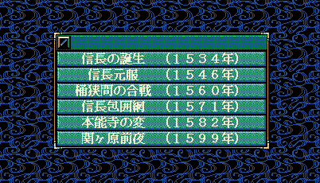

今実行しているゲームのシナリオ番号（１～６）や、シナリオ名「信長の誕生 (１５３４年)」などを得るためのAPIです。
シナリオによって、処理を変更する必要性が出た、といった場合に利用してください。

シナリオのタイトルや説明文を変更するには
On_シナリオ説明表示直前 を利用してください。
シナリオで設定されている値を変更するには
On_シナリオデータ反映直後 を利用してください。
シナリオで演出などを入れるのは
On_シナリオ大名選択直前 が適している場合もあります。
void カスタム::On_プレイヤ担当ターン《メイン画面》() {
int iScenarioNo = Get_現在のシナリオ番号();
string curScenarioName = Get_シナリオ名(iScenarioNo);
デバッグ出力 << "シナリオはメニューの上から、" << iScenarioNo << "番目です" << endl;
デバッグ出力 << "シナリオ名は、" << curScenarioName << "です" << endl;
}
シナリオはメニューの上から、3番目です シナリオ名は、 桶狭間の合戦 （１５６０年） です
「シナリオ」に関する主な所は以上となります。 詳しくは「シナリオ情報型.h」を参照してください。